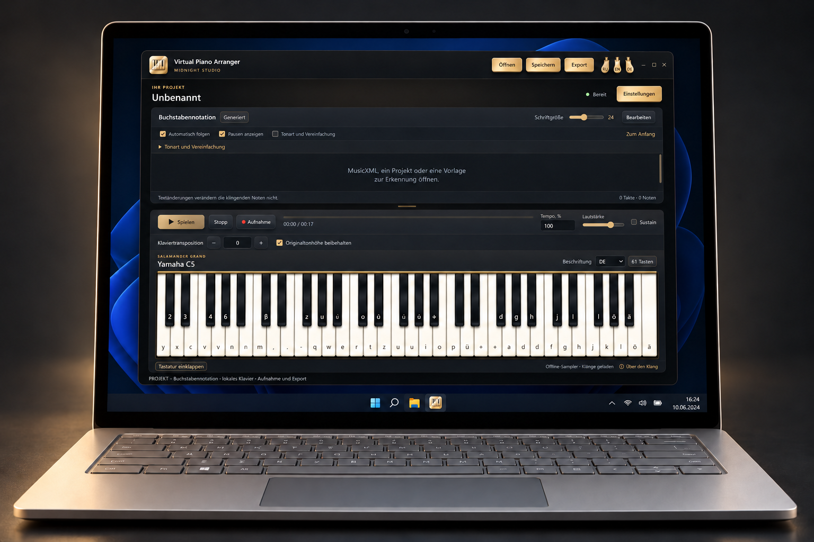

Windows · x64
Virtual Piano Arranger
Offline-Klavier, Buchstabennotation und Import ausgewählter MIDI-Stimmen. Notenerkennung experimentell.
Vorabversion · 0.1.0-preview.1Vor dem StartWindows x64; Python/Qt und separate Erkennungslaufzeit enthalten. EXE unsigniert.


So funktioniert es
- Klavier spielen
- Mit Buchstabennotation arbeiten
- MIDI-Stimmen arrangieren
Erste Schritte
Portable vollständig entpacken, SHA-256 prüfen, VirtualPianoArranger.exe öffnen.